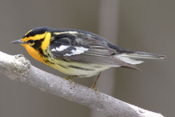
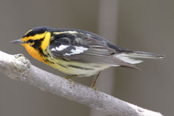

| Blackburnian Warbler | |
|---|---|
|  | |
| Conservation status | |
| Binomial name | |
| Dendroica fusca (Müller, 1776) |
|
| Synonyms | |
|
Dendroica blackburniae |
| Blackburnian Warbler | |
|---|---|
|  | |
| Conservation status | |
| Binomial name | |
| Dendroica fusca (Müller, 1776) |
|
| Synonyms | |
|
Dendroica blackburniae |
The Blackburnian Warbler, Dendroica fusca , is a small New World warbler. They breed in eastern North America, from southern Canada, westwards to the southern Canadian Prairies, the Great Lakes region and New England, to North Carolina.
Blackburnian Warblers are migratory, wintering in southern Central America and in South America, and are very rare vagrants to western Europe.
Blackburnian Warblers are 11.5 cm long and weigh 8.5 g. In summer, male Blackburnian Warblers display dark gray backs and double white wing bars, with yellowish rumps and dark brown crowns. The underparts of these birds are white, and are tinged with yellow and streaked black. The head is strongly patterned in yellow and black, with an orange throat.
Other plumages are washed-out versions of the summer male, and in particular lack the strong head pattern, with weaker yellows and gray, instead of black.
The breeding habitats of these birds are mature coniferous woodlands or mixed woodlands, especially ones containing spruce and hemlocks. Blackburnian Warblers lay 4-5 eggs in a cup-shaped nest which is usually placed 2–38 m (5–80 feet) above the ground, on a horizontal branch.
These birds are insectivorous, but will include berries in their diets in wintertime. They usually search for insects in treetops.
Blackburnian Warblers' songs are a simple series of high swi notes, which often ascend in pitch. Their call is a high sip.
These birds were named after Anna Blackburne , who was an English botanist.

{kind=link}